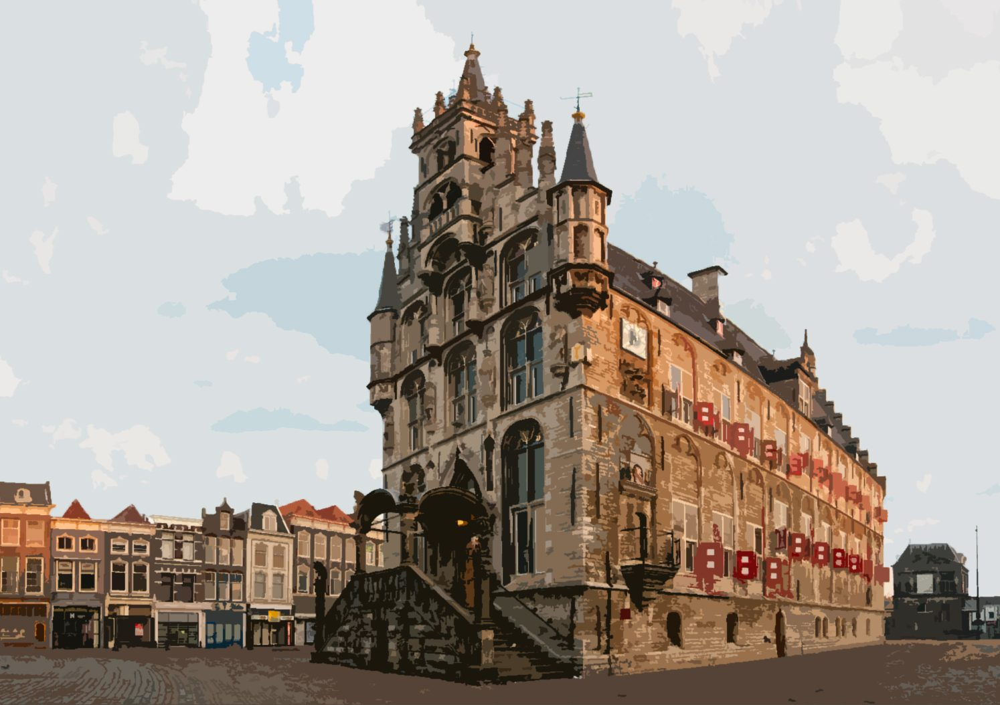
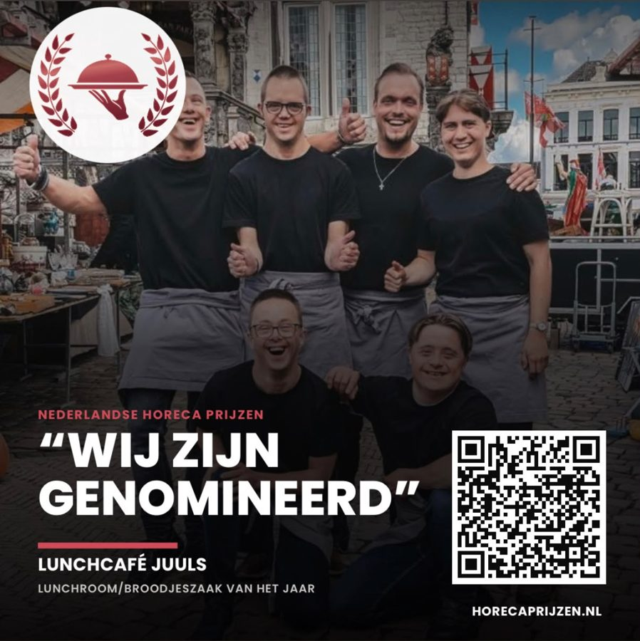
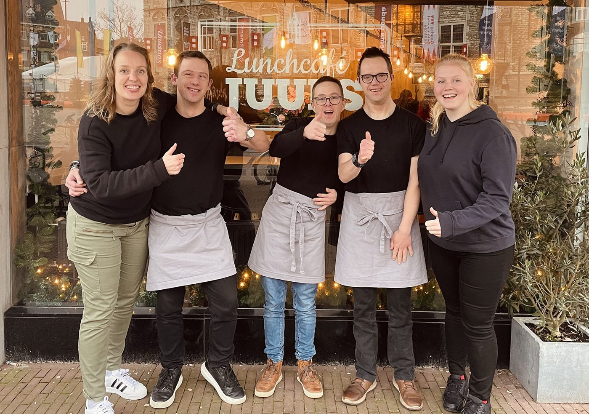
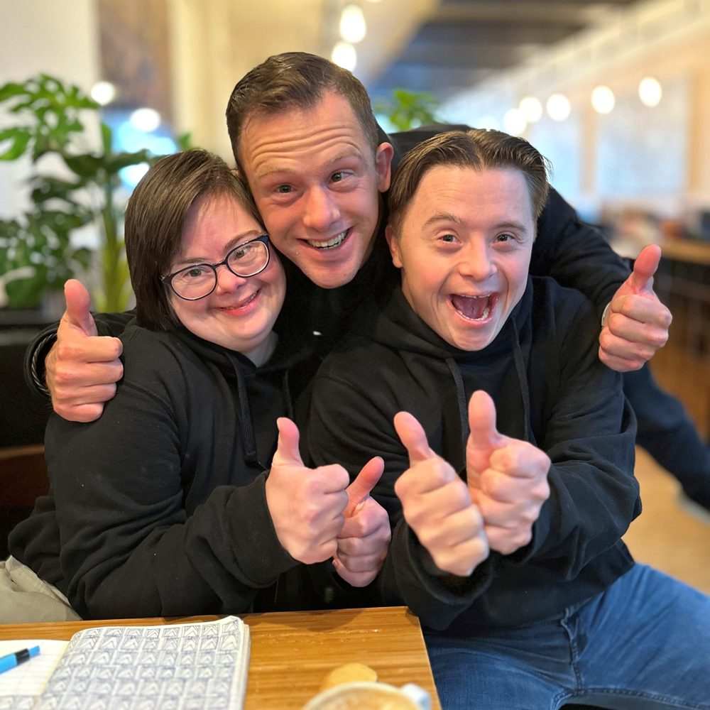
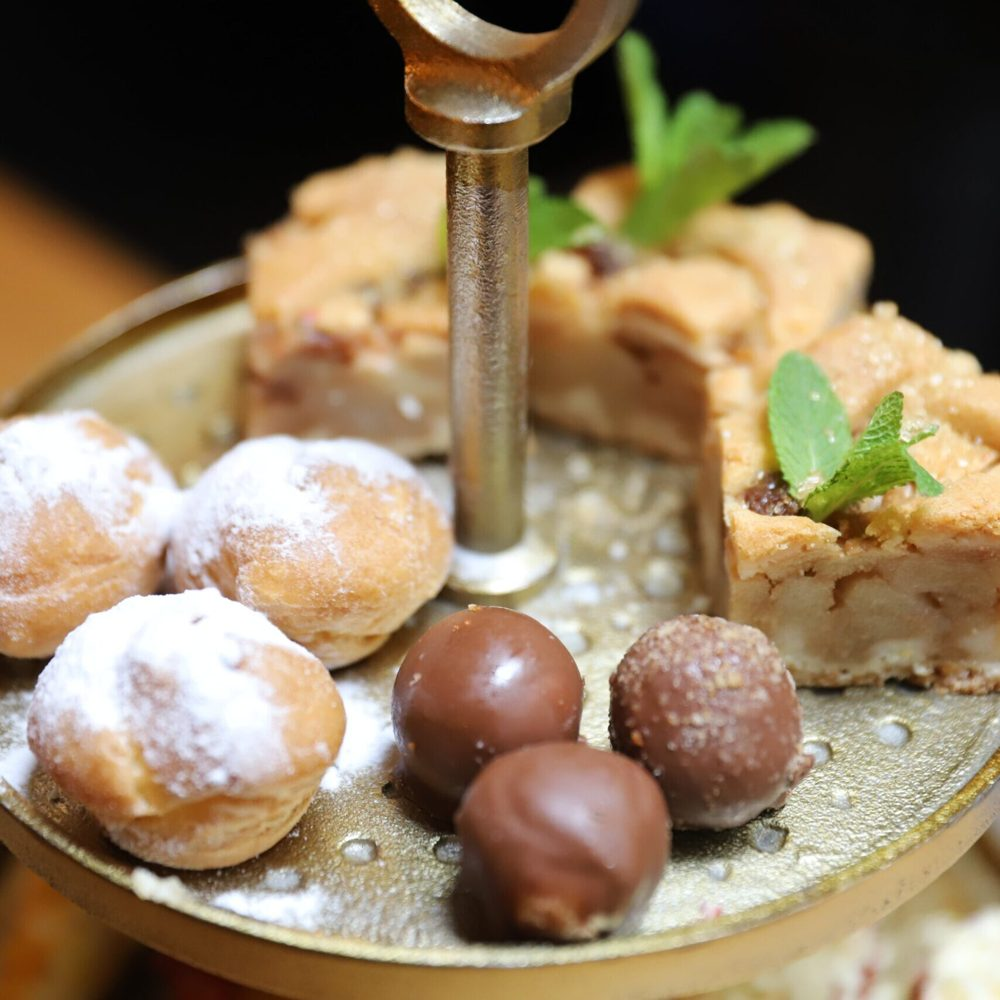
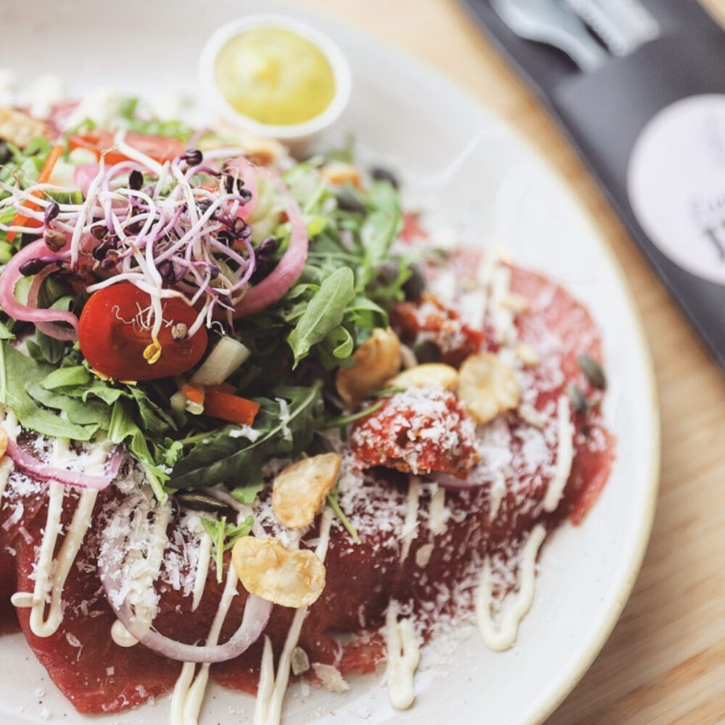
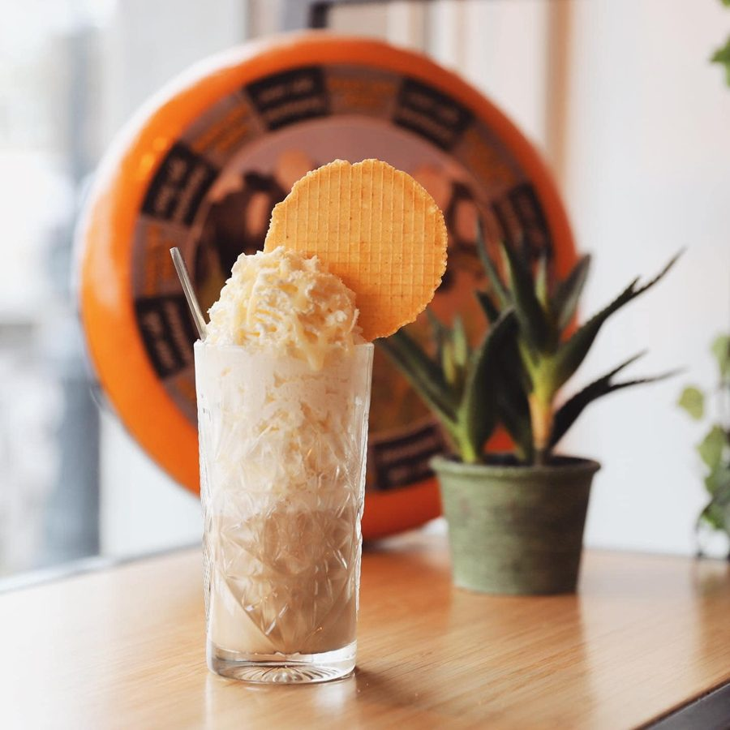
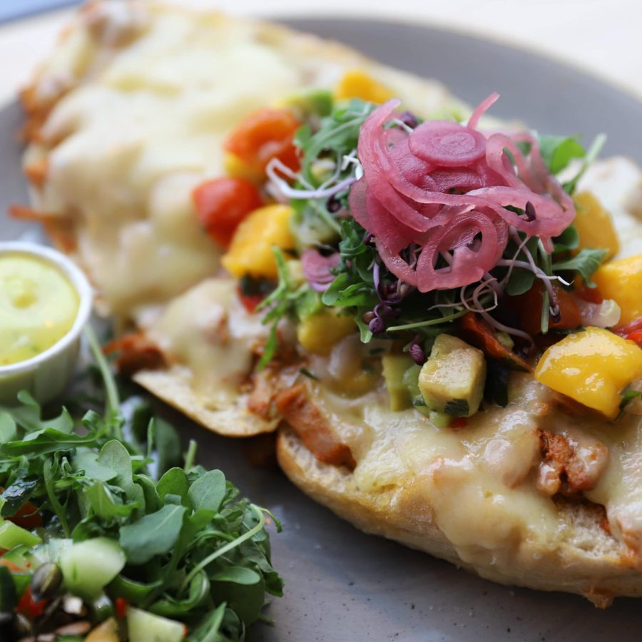
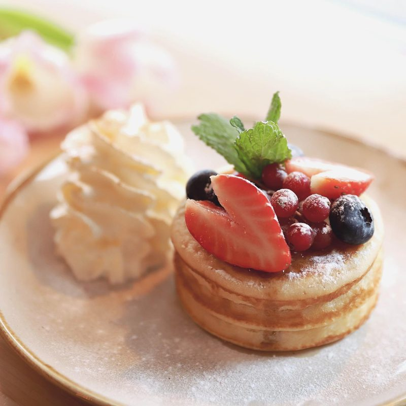

Lunch, koffie, high tea of een glas wijn met bittergarnituur. Het team van Juuls staat elke dag klaar op Markt 10.




Sinds de opening op 19 maart 2010 heeft Gouda een lunchcafé waar medewerkers met een verstandelijke beperking de zaak draaien. Dat is uniek in Gouda.
Met een begeleidersteam werken zij aan alles wat bij horeca hoort. Er is ruimte voor een praatje met de bediening, en dagvers eten staat op het bord.
Tatum Perdijk en Celine Muller leiden het team, samen met de begeleiders.

Vanaf twee personen. Reserveer uiterlijk een dag van tevoren. Voor dezelfde dag belt u het beste even.



